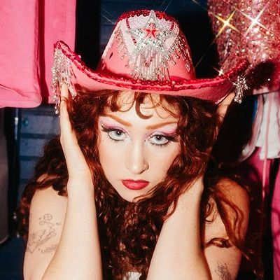
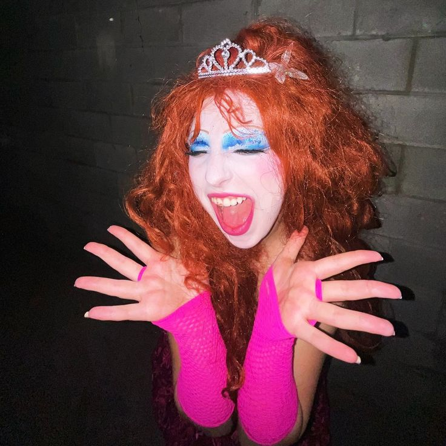
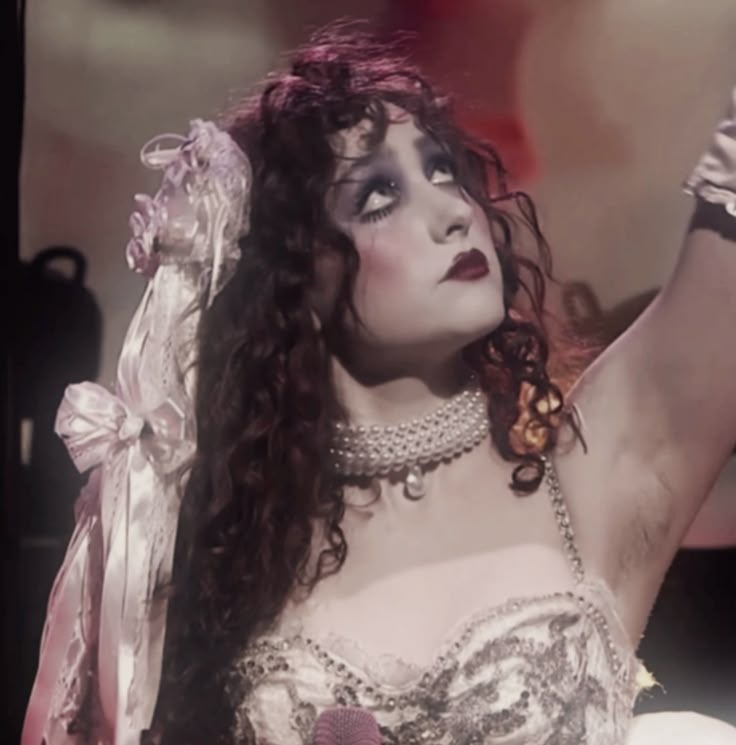
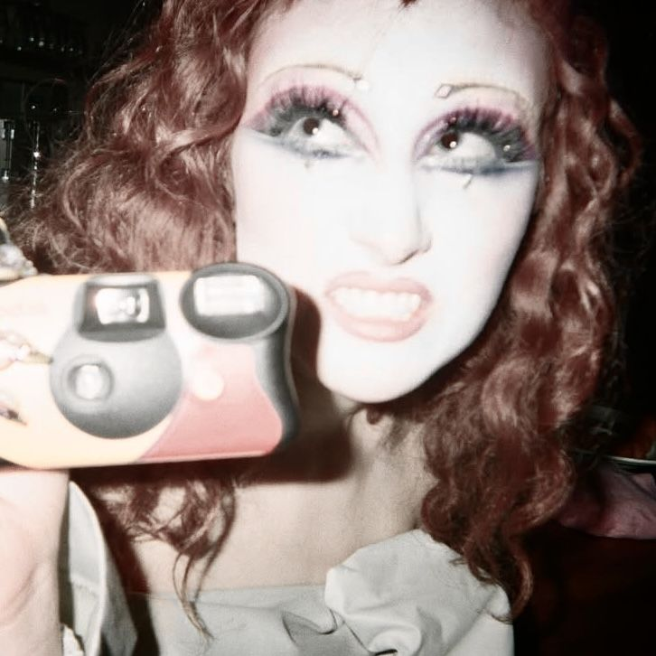
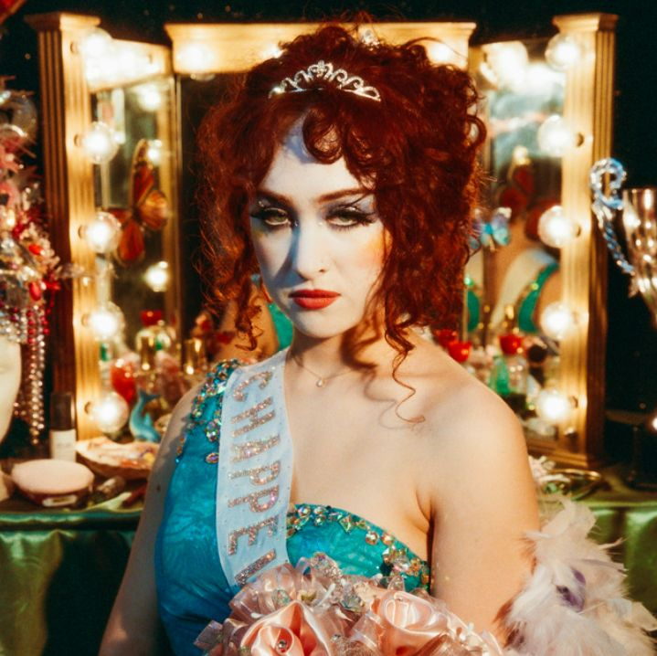
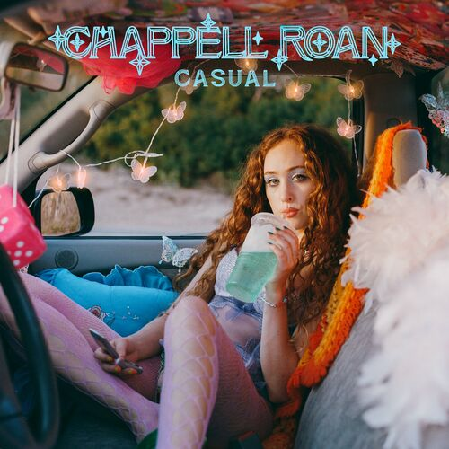

Good luck babe!

Reproducciones en Spotify: 1,988,255,042
¡Quiero oírla!"Oh mama, I'm just having fun on the stage in my heels."
— "Pink Pony Club," by Chappell Roan, The Rise and Fall of a Midwest Princess






Chappell Roan (nombre real: Kayleigh Rose Amstutz) es una cantante y
compositora estadounidense nacida el 19 de febrero de 1998 en Willard, Missouri.
Creció en un entorno conservador y desde joven se formó en música, aprendiendo piano
y escribiendo canciones, lo que después influiría en su estilo narrativo y confesional.
Comenzó a llamar la atención en internet a mediados de la década de 2010 y dio sus primeros
pasos profesionales con lanzamientos tempranos que la llevaron a firmar con un sello
discográfico importante.
Con el tiempo, construyó un proyecto pop de estética teatral y “camp”, con letras
centradas en la identidad, el deseo y la experiencia de crecer en el Medio Oeste.
Su reconocimiento se consolidó con el álbum The Rise and Fall of a
Midwest Princess (2023), que impulsó su popularidad y la colocó como una de las
figuras emergentes más comentadas del pop contemporáneo, gracias a su puesta en escena,
su propuesta visual y su conexión con audiencias jóvenes. Sus canciones de indie-pop suelen
contener letras personales sobre relaciones e identidad lésbica.
Para saber más sobre esta increíble artista recomiendo este video
Reproducciones en Spotify: 1,988,255,042
¡Quiero oírla!
Reproducciones en Spotify: 1,108,097,412
¡Quiero oírla!
Reproducciones en Spotify: 861,932,100
¡Quiero oírla!
Reproducciones en Spotify: 545,628,949
¡Quiero oírla!
Reproducciones en Spotify: 1,988,255,042
¡Quiero oírla!